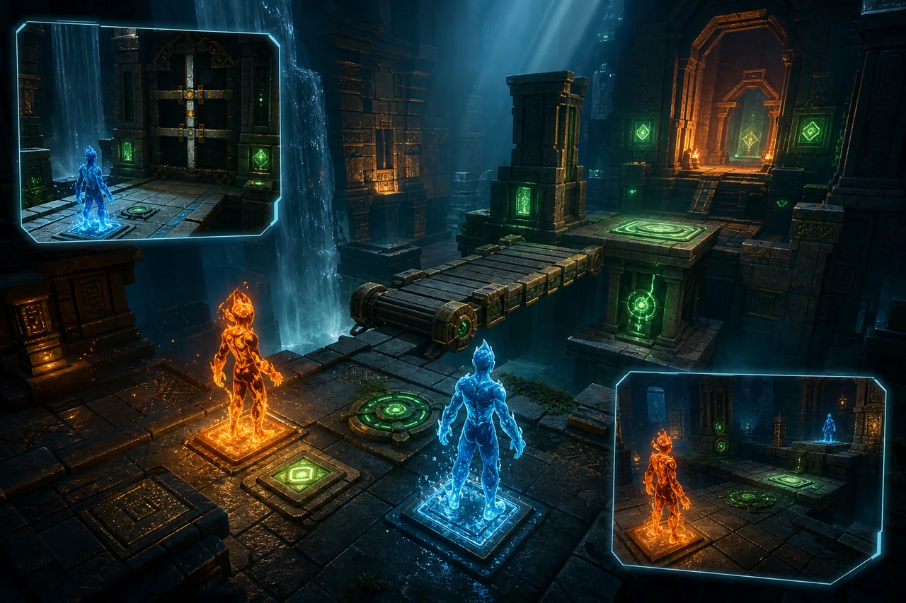

← 全部作品
Spatial study · 2026
3D CO-OP SPATIAL SYSTEMS
元素人：3D 协作系统
元素人 3D 模式的角色、相机与机关实现CAM A / FOLLOW

CAM B / OVERVIEW
01C
元素人的 3D 模式技术专题，介绍角色移动与动画、立体机关、多视角相机和联机同步。重点是让玩家看清队友的位置、机关状态，以及高低差和遮挡中的行进路线。
- 我的职责
- 3D 角色实现 / 相机系统 / 空间交互 / 联机同步
- 技术栈
- Godot 3D / GDScript / AnimationTree / Camera System / WebRTC / P2P / Physics
THE CHALLENGE
3D 场景中的遮挡与状态同步
坡面、落地和移动平台需要额外的运动判定；遮挡可能让玩家看不见队友或开关。联机时，动态机关还需要确定由哪一端计算状态，防止双方看到不同结果。
THE RESPONSE
按任务切换相机视角
角色状态机驱动动画与元素特效，关键机关和动态物体由指定的一端计算并同步。相机提供跟随、总览、机关观察和队友视角，帮助玩家判断路线与协作时机。
⌁角色、机关与相机模块
角色与动画
模型、骨骼、动画状态机与水火元素表现共享同一角色状态
3D 移动
地面、坡面、跳跃、空中控制、平台附着和碰撞边界
机关状态管理
指定一端计算机关与动态物体状态，再同步给另一端
相机模式
在跟随、总览、机关观察和队友视角之间切换
遮挡与提示
遮挡透视、队友轮廓、目标高亮和局部辅助视角
联机同步
位置、朝向、动作和交互分频同步，兼顾实时性与一致性